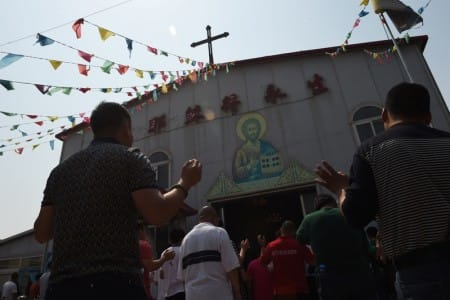

世界苦茶10月12日新闻 | 36条 | 中国对锡安教会全国大抓捕

中国对锡安教会全国大抓捕 | 中国生育率与出生率不匹配 | 以色列拒绝从监狱释放颇受欢迎的巴勒斯坦领导人 | 港民主党主席非法集结罪罪成
苦茶数据
美元兑人民币：7.14（昨日7.14，前日7.13）
美元兑日元：152.46（昨日152.75，前日153.10）
上证指数：休市（昨日3897，前日3913）
标普500指数：休市（昨日6552，前日6735）
比特币：112279（昨日112414，前日121406）
布伦特原油：62.73（昨日65.04，前日66.43）
中国新闻
• 港民主党主席罗健熙非法集结罪名不成立 获全额诉讼费。
香港民主党主席罗健熙因参与反修例运动被控非法集结罪，法院裁定无罪后，律政司提出上诉但遭驳回。法院并裁定，罗健熙可获全额诉讼费。综合香港01和《明报》报道，香港2019年爆发反修例运动，同年11月，香港理工大学被示威者占领，警方随后封锁理大，并阻止在校内的示威者离开。在此期间，罗健熙与多名声援示威学生的人士在学校附近被捕，并被控参与非法集结。经审讯，法院裁定罗健熙非法集结罪名不成立。香港律政司提起上诉，称罗健熙在冲突现场逗留约40分钟，无视警方的劝离，认为有“强而有力的环境证供”足以定罪。不过，高等法院今年3月驳回上诉，维持原判。罗健熙随后向上诉庭申请全额上诉讼费。
• 香港立法会选举将展开提名 仍未有人公开宣布参选。
再过一个多月就是香港新一届立法会选举，但至今仍未有人公开宣布参选。自称“唯一非建制派”的社会福利界议员狄志远，据悉弃选机会较大。一些港区全国人大代表和“政二代”背景的区议员，则蠢蠢欲动，有意竞逐立法会选委界别议席。香港立法会换届选举将于12月7日举行，提名期于10月24日展开。年逾七旬的立法会主席梁君彦，以及刚满70岁的资深议员马逢国，早前双双突然宣布退下火线，令人关注年逾70岁的议员今年是否不能连任。《香港经济日报》周五报道，上一届立法会选举是完善选举制度后的首届，10个地区的20个直选议席，区区有竞争，占30席的立法会传统功能组别，也破天荒全数有竞争。
• 中国大陆悬赏征“心战大队”犯罪线索 台国防部批拙劣认知战。
台湾总统赖清德在双十演说中宣示强化国防后，中国大陆发布对台湾军方心理作战大队核心骨干违法线索的悬赏公告，台湾国防部批评这是拙劣的认知作战，“充分展现极权政体的霸道”。福建省厦门市公安局星期六发布悬赏通告，公布18名据称是台湾军方“政治作战局心理作战大队”核心骨干的人员信息，包括姓名、照片、性别和台湾身份证号码，并悬赏1万元人民币征集他们的“违法犯罪线索”。据新华社报道，中国大陆警方指控“心战大队”架设反宣网站抹黑攻击，制作反动游戏煽动分裂，伪造影音内容混淆视听，运营反动电台反宣渗透，调度外部力量诱导舆论，迷惑两岸民众，宣扬台独，煽动分裂国家。
• 习近平致电金正恩：祝贺朝鲜劳动党成立80周年。
中共总书记习近平星期五致电朝鲜最高领导人金正恩，祝贺朝鲜劳动党成立80周年，强调维护、巩固与发展好中朝关系，始终是中共和中国政府不变的方针。据新华社报道，习近平在贺电中说，劳动党80年来团结带领朝鲜人民奋发进取、攻坚克难，推动朝鲜社会主义事业取得可喜成就。他强调，中朝两国同为共产党领导的社会主义国家，又指近年他与金正恩多次会晤，为两党两国关系发展领航把舵，开启中朝友谊崭新篇章。习近平说，中方愿同朝方一道，加强战略沟通，深化务实合作，密切协调配合，推动中朝关系不断向前发展，服务两国社会主义建设事业，为地区乃至世界和平稳定和发展繁荣作出积极贡献。朝鲜劳动党星期五迎来建党80周年纪念日。
• 锡安教会的牧师在中国被拘留，他的女儿和一家宗教监测组织称。
锡安教会的一位牧师在中国被拘留，他的女儿和一个宗教监测组织称 据其女儿，一位教会牧师及一个监测东亚国家宗教状况的组织称，中国一所著名地下教会的一名牧师被拘留。锡安教会的牧师Ezra Jin Mingri周五晚上在中国东南部广西北海的家中被拘押，同时北京及中国至少另外五个省的数十名其他教会领袖也被拘留。据目前在美国学习的一位中国锡安教会牧师Sean Long称，他们可能面临“通过互联网非法传播宗教内容”的指控。Long在电话中对美联社表示：“这是一个非常令人不安和痛心的时刻。这是对宗教自由的野蛮侵犯，而宗教自由被写进了中国宪法。我们希望我们的牧师立即获释。
• 中国、美国与泰国在有争议的南海一处暗礁附近缴获创纪录数量的冰毒。
中国与美国、泰国在南海有争议的一个礁附近缴获创纪录冰毒 大规模突袭缴获近5千公斤冰毒，成为近年来亚太地区最大海上缉毒行动 中国与美国和泰国合作，在南海一处有争议的礁附近缴获了创纪录的大量非法毒品，国家媒体周五报道。人民日报报道称，中国禁毒局和中国海警在美国缉毒局与泰国皇家警察的线索指引下，于黄岩岛西南约130海里处拦截了“吉盛”号。行动发生在2月24日清晨，查获冰毒4,973.4公斤，并抓获7名嫌疑人，但相关信息直到现在才被披露。报道称，此案为近年来亚太地区单次最大海上缉毒案。报道补充说，中国公安部缉毒局、泰国皇家警察缉毒局和美国缉毒局的代表近日在广东广州会面，商讨此案最新进展。
印太新闻
• 印度一场阿富汗大使馆活动将女性记者排除在外引发愤怒。
在印度，女记者被排除在阿富汗驻印使馆活动之外一事引发愤怒。印度政界人士和记者批评政府未能就此发声。周五，大约16名男性记者被选中参加在阿富汗使馆举行的与阿富汗外长阿米尔·汗·穆塔克伊的座谈会。记者们注意到女性和外国媒体被拒之门外。印度外交部表示“未参与阿富汗使馆的新闻互动”。塔利班政府的一位消息人士承认女性并未被邀请出席。他们告诉BBC：“由于缺乏适当协调，女性记者被排除在外，如在德里再举办下一次会议，她们将被邀请参加。”反对派领袖拉胡尔·甘地表示，允许该活动继续进行，印度总理纳伦德拉·莫迪是在“告诉印度的每一位女性，你们太软弱，无法为自己挺身而出”。印度编辑协会强烈谴责这一排斥行为。
• “反共人士”王世坚 意外走红大陆。
长期站在台湾政坛风口浪尖、不时语出惊人的民进党立委王世坚可能也没想到，对岸网民以他的犀利言论为原型创作的“洗脑神曲”，竟让他在大陆意外走红。一名大陆音乐博主最近将王世坚在议会质询时的骂人金句进行拼接，改编成了一首名为《没出息》的歌曲，并以王世坚铿锵有力的原音和神情激昂的原貌重现，迅速在两岸网络走红。核心歌词“本来应该从从容容游刃有余，现在是匆匆忙忙连滚带爬”，“睁眼说瞎话，你在哽咽什么啦？……没出息”，均出自王世坚担任台北市议员时在议会质询的慷慨陈词。
• 在克什米尔暴力事件后，印度正在强行驱逐穆斯林，包括其本国公民。
印度在克什米尔暴力事件后强行驱逐包括本国公民在内的穆斯林 孟买——在过去十年里，穆斯塔法·卡马尔·谢赫在孟买一个工人阶层郊区的警察局对面摆了个简易摊位。他的拿手好菜是jhalmuri，一种由膨化米和香料制成的辛辣小吃。警察常来吃一口，聊几句。六月的一天，两名警员来到他家要求查看身份证。他出示了四张证件，其中一张写明他是印度选民。卡马尔说，警员指控他伪造这些证件并将他拘留。他否认指控。现年52岁的卡马尔没有打电话也没有请到律师。接下来的五天里，他说警察和印度边境安全部队的一个小组把他空运了一千多英里，送到印孟边界。某个午夜，卡马尔说，“边防人员给了我们300”。
• 创纪录的拍卖如何推动印度艺术热潮。
一幅光辉的金色画布，层叠着细腻的纹理和隐约的形状，既富有活力又显得宁静。这幅无题的1971年作品来自瓦苏迪奥·桑图·盖通德，在德里最近一次由Saffronart主办，创下纪录的拍卖会上成为头条，成交价为4020万美元——创下南亚艺术拍卖总额的最高纪录。盖通德的这件作品单件成交757万美元，几乎是估价的三倍，使其成为印度第二昂贵的画作。这次竞拍为本已强劲的印度艺术拍卖季带来了更大的动力。几天后，苏富比以略低于盖通德作品的价格售出艺术家弗朗西斯·牛顿·苏扎的风景画《汉普斯特德的房屋》，成为印度第三高成交画作。今年早些时候，印度最昂贵画作的纪录曾被M.F.胡赛因的一幅无题作品刷新。
• 在日外国人数量达395万，创新高。
日本出入国在留管理厅10月10日发布的数据显示，截至2025年6月底在留外国人数为395万6619人。比2024年底增加18万7642人，创出历史新高。在留外国人是指拥有日本的永久居留权或某种在留资格的中长期居留者。不包括入境游客等在日本停留不超过3个月的短期滞留者。从在留资格的详细分类来看，永住者为93万2090人，占比最高；其次是「技术·人文知识·国际业务」的在留者为45万8109人；技能实习生为44万9432人。
• 日本16日起收紧外国人「经营签」申请条件。
日本法务相铃木馨祐10月10日宣布修改省令，将外国人在日本创业所需的「经营和管理签证」申请时的资本金条件提高到3000万日元以上。同时，还将新增与日语能力相关的要求。新的省令将于16日正式施行。铃木在10日内阁会议后的记者会上解释修改原因时表示：「在留资格审查过程中，曾多次发现申请人实际上并无真实经营活动的案例。」 目前的经营签发放条件为：外国人在日本设立营业所，并且满足「准备资本金500万日元以上」或「雇用2名以上全职员工」这两项条件之一。签证允许最长居留期限为5年。
• 日本在野党摸索联手推举首相候选人。
日本在野党立宪民主党打算在临时国会的首相提名选举中，通过统一推举在野党决胜投票的支援对象来实现政权更叠。立宪民主党不再执着于投票支援党魁野田佳彦，而是正在探索推举国民民主党党魁玉木雄一郎作为统一候选人的可能性。另一方面，国民民主党则要求立宪民主党在基本政策上与自身保持一致，对在野党合作持谨慎态度。
科技新闻
• 媒介与科技可能导致文化孤岛化。
媒介与科技发展可能导致文化“孤岛化”，进而加剧世界失序；但其中或许也孕育新的秩序格局。清华大学新闻与传播学院院长周庆安星期五在新中论坛“华人文化之间的对话”讨论中指出，社交媒体普及和人工智能发展已经改变一代人的媒介使用习惯，从而导致社会结构、沟通方式，甚至决策方式发生变化。
• 中国科学家寻求方法释放人工智能的潜力以解决现实世界问题。
中国科学家寻求释放人工智能应对现实问题的力量 新技术可减少手语使用者与自闭症者的沟通障碍，加快医疗诊断并减轻孤独感 西交利物浦大学人工智能与高级计算学院副院长苏炯龙研究人工智能应用，旨在减少歧视、提供情感支持并加速医疗诊断。他表示，正与学生共同创办一家初创公司，学生们开发了一款将书面文字与手语互译的人工智能软件。“这一轻量级专有模型可作为移动应用使用，或安装在智能眼镜上，”他补充道，虚拟化身将展示手语动作，或实时显示文本。苏炯龙称，团队已与地方政府和产业园区接触，后者热衷于为产品上市提供资金支持。“我们正在创新这些技术以满足社会的真实需求，”他说。
经济新闻
• 100%关税威胁旨在极限施压北京 特习会仍可期。
美国总统特朗普对于本月底是否与中国国家主席习近平会晤态度反复，受访学者指出，特朗普的最新关税威胁旨在以极限施压手段回应北京近期举措，然而中美经贸谈判目前尚未进入终局阶段，“特习会”依然有望举行。中国星期四显着加大稀土出口管制的范围和力度，特朗普当地时间星期五在社交媒体发文批评中国稀土新规，指北京“变得充满敌意”，并扬言没有必要在本月底与习近平会面；他还在另一条贴文中威胁称，自11月1日起，美国将对中国商品加征100%关税，并对所有关键软件实施出口管制。不过，特朗普随后在白宫告诉媒体，如果中国撤销稀土新规，他可能会放弃大幅提高关税的计划，同时表明并未取消来临的特习会。
• 发展中国家对华年净债务支付达39亿美元。
一份研究报告显示，发展中国家目前偿还对华债务的金额，已超过从中国获得的新贷款，这一变化可能加剧这些国家的经济压力，并进一步拖慢气候投资进程。美国波士顿大学全球发展政策中心星期五发布的报告《重振中国对全球南方的发展融资》显示，以新贷款款项减去本金和利息偿还额计算的净债务转移额，在2022年和2023年已转为负值，意味着发展中国家每年向中国偿还的债务比获得的贷款多出39亿美元。作为全球最大的双边债权国，中国长期在资助全球南方的基础设施建设中扮演关键角色。2008年至2024年间，中国通过国家开发银行和中国进出口银行注资逾4720亿美元。根据报告，这些资金支持了900多个总额达3160亿美元的项目。
• 瑞士外长望明年初达成中瑞升级版自贸协定。
瑞士外长卡西斯与中国外长王毅会面后说，希望两国在明年初达成升级版自贸协定。中瑞外长战略对话于当地时间星期五在瑞士南部小城、重要的文化和历史中心贝林佐纳举行。据路透社报道，卡西斯在会后对记者说：“我们对中瑞自贸协定升级谈判具建设性的推进感到满意，双方均希望能尽快完成这项谈判。” 他说，两国可能无法如预期在今年底达成协议，但期待明年初能在国际自由贸易规则的基础上实现更加开放、公平的贸易。王毅也在会后说，中瑞双方正在加快打造自贸协定的升级版，将更多商品纳入零关税范围，更好惠及两国的企业和消费者。
• 美国与海湾国家的合作如何可能阻碍中国的人工智能领导计划。
美国与海湾伙伴关系如何阻挠中国的人工智能领军计划 北京在海南打造的水下数据中心已取得重大进展，但要在竞争中取得优势，必须把目光投向国境之外。中国率先在全球部署了最先进的商业水下数据中心。该设施有望升级数字服务、提升北京在全球互联网流量中的份额，并吸引全球科技巨头的外国直接投资。要取得进展，中国必须找到竞争优势，尤其是在基础设施快速扩张的阿拉伯联合酋长国和美国两地——两国在人工智能竞赛中投入数十亿美元，在全国兴建五个新的数据中心。这里正是中国要主导价值2420亿美元数据中心产业所面临的关键挑战。
• 中国大使表示如加拿大取消中国电动车关税，中国也将取消加拿大农产品关税。
据CTV报道，中国驻加拿大大使王镝表示，如果加拿大取消对中国电动车的关税，中国将取消对加拿大农产品的关税，包括油菜籽产品。王镝在CTV《问政时刻》节目中表示：“如果加拿大取消对中国商品的单边不合理关税，中国也将做出相应回应。如果电动车关税被取消，中国也将取消对加拿大相关产品的关税。” 自去年10月以来，加拿大对从中国进口的所有电动车征收100%的关税，理由是保护本国产业制造能力和国家安全。时任政府还指出，中国通过不公平补贴其电动车产业，从而向市场倾销产品。此外，加拿大对中国的钢铁和铝产品也征收了25%的关税。作为回应，中国对加拿大农产品加征关税。
• 研究显示中国的生育激励措施与地方出生率不匹配。
尽管在研究的生育友好指数中排名靠后，广东省去年仍是全国出生率最高的省份之一 财政激励和其他支持措施在多大程度上影响生育决策或生育数量？在中国，这种关联似乎很弱。中国研究人员在最近的一项研究中表示，尽管广东是全国新生儿的最大贡献者，这一南方经济强省却为生育提供了相对较差的环境。该排名来自首都经济贸易大学期刊《人口与经济》上月刊登的一项研究。报告作者为南京邮电大学和中国人口与发展研究中心的研究人员，称研究显示了“生育条件与政策支持之间的不匹配”。“我们需要加强对生育条件与生育支持关系的深入研究，探索其内在联系和规律，为政策制定提供更科学的依据，”他们说。
俄乌战争
• 匈牙利发起请愿，反对欧盟为乌克兰战争提供资金，奥尔班表示。
匈牙利总理维克多·欧尔班在10月11日表示，布达佩斯已发起全国性请愿活动，收集签名以反对欧盟为资助乌克兰战争所制定的“战争计划”。“几周前在哥本哈根，布鲁塞尔提出了他们的战争计划：欧洲出钱，乌克兰人作战，俄罗斯最终被耗尽。没有人告诉我们这将花多少钱，或会持续多久，”欧尔班在Facebook上宣布请愿活动时写道。“在丹麦我明确表示：我们不想参与其中，”欧尔班继续称，请愿活动将尝试覆盖“每个城市和每个村庄”。作为欧盟中对俄罗斯最公开亲近的领导人，欧尔班与克里姆林宫保持密切关系，多次阻止或拖延对乌克兰的军事援助，并重复克里姆林宫的叙事。自俄罗斯发动全面入侵以来。
• 在紧张局势加剧之际，北约飞机在俄罗斯边境附近进行了12小时飞行。
北约飞机在俄边境附近进行12小时飞行，紧张局势升级 英国皇家空军10月10日报道称，两架英军飞机在美空军支援下，于边境附近执行了为期12小时的巡逻飞行。此行动是对近期俄罗斯对包括波兰、罗马尼亚和爱沙尼亚在内的多个北约国家的领空侵犯所作出的回应。10月9日，一架英军RC-135“铆钉接头”电子侦察机和一架P-8A“海神”海上巡逻机从北极地区出发，飞经白俄罗斯和乌克兰一线执行任务。美空军的一架KC-135空中加油机为此次任务提供了空中加油支持。“这是与我们美军和北约盟友一起执行的一次重要联合任务，”英国国防大臣约翰·希利表示。
• 过去一天俄罗斯袭击导致乌克兰4人死亡、18人受伤，并波及能源电网。
本篇报道已更新切尔尼戈夫州最新伤亡数据。区域当局10月11日报道，过去一天俄罗斯在乌克兰各地的袭击至少造成5人死亡，至少17人受伤。莫斯科方面再次袭击能源基础设施，加剧了冬季来临前对乌克兰电网的压力。空军称，夜间俄方发射的78架“沙赫德”型及其他无人机中，乌方防空拦截了54架。记录到21起无人机打击，分布在6个地点。切尔尼戈夫州方面，俄罗斯无人机袭击了一家能源公司车辆并引发火灾。州长维亚切斯拉夫·乔乌斯表示，一名员工当场死亡，四人受伤并被送医。州长随后报告称，其中一名受伤人员在医院不治身亡。
• 丹麦将通过新舰艇、新战机和新总部加强北极防务。
丹麦宣布追加42亿美元国防开支，以加强包括格陵兰在内的北极和北大西洋地区安全。同时还将再向美国购买45亿美元的16架F-35战机，使其此型先进战机总数达到43架。丹麦国防部长特罗尔斯·伦德·波尔森周五在一份声明中表示：“通过这项协议，我们显着增强了丹麦武装部队在该地区的能力。” 北极处于北美、俄罗斯与欧洲其余部分之间的关键十字路口。丹麦国防部的声明称，其军队的目的在于安全，并在必要时在北约安全联盟框架内进行防御。参谋长迈克尔·希尔德高对丹麦公共广播公司DR表示：“武装部队的任务是确保王国内部的安全——并在必要时在北约框架内保卫格陵兰、法罗群岛和丹麦的各个领域，”但未指明潜在对手。
世界新闻
• 特朗普指示五角大楼在政府停摆期间动用“可用资金”支付军人薪酬。
特朗普指示五角大楼动用“可用资金”在政府停摆期间支付军人薪酬 在Truth Social的一则帖子中，总统特朗普表示他已“确定资金”以确保现役军人在下周获得薪酬，因国会在重启联邦政府的谈判上陷入僵局。“作为三军统帅，我正在行使我的权力，指示我们的战争部长皮特·赫格塞思动用所有可用资金，以确保我们的部队在10月15日获得薪酬。我们已确定可用于此的资金，赫格塞思部长将使用这些资金支付我们的部队，”特朗普说。现役军人面临在10月15日星期三错过首笔完整薪水的风险。
• 美国劳工部承认，美国人不愿意干农活，特朗普的移民政策正在伤害农民和供应。
据华盛顿邮报报道，特朗普政府的劳工部承认，移民打压政策正在切断农业劳动力来源，使美国人的食品价格面临上涨风险。美国劳工部上周在提交联邦公报的一份不太引人注意的文件中警告称，“非法移民几乎完全停止流入”，正威胁着“美国国内食品生产的稳定性及消费者的食品价格”。劳工部在联邦公报中表示：“除非劳工部立即采取行动，提供稳定且合法的劳动力来源，这一威胁将进一步加剧。” 这一文件所提到的，是《大美丽法案》中增加对移民执法的资金支持。联邦公报是所有拟议法规公开供公众查阅和评论的地方。此外，农业部长布鲁克·罗林斯曾表示，大规模驱逐移民将使美国农业劳动力“百分之百由美国人组成”，但劳工部对此提出异议。
• 哈马斯敦促以色列作为加沙协议的一部分释放重要囚犯。
哈马斯敦促以色列将知名囚犯列入加沙协议的人质交换名单 哈马斯正在敦促以色列在一项停火协议中将一些知名巴勒斯坦人纳入释放囚犯名单——该协议还将促成从加沙归还人质。以色列司法部公布了将被释放的250名囚犯名单，但排除了包括马尔旺·巴尔古提和艾哈迈德·萨阿达特在内的七名高调囚犯。两人因被判参与在以色列的致命袭击而服刑，长期以来被巴勒斯坦人视为抵抗的象征。根据美国总统唐纳德·特朗普提出的协议，预计将在周一12:00之前释放20名以色列人质。一位熟悉谈判的巴勒斯坦高级官员告诉BBC，美国特使斯蒂夫·威特科夫曾承诺会就将这些巴勒斯坦囚犯排除在外的问题向以色列总理本杰明·内塔尼亚胡提出。
• 威尔德斯因安全威胁暂停竞选活动。
荷兰极右翼领袖赫特·维尔德斯在被告知自己是疑似恐怖组织盯上的一名政治人物后，已将竞选活动“暂停，直至另行通知”。维尔德斯所属的自由党在10月29日的英国临时议会选举前民调领先。维尔德斯周五晚在X上表示，荷兰反恐机构NCTV已告知他，某个计划对包括比利时首相巴特·德韦弗在内的多名政界人士发动多起袭击的组织“已将我列为目标”。“这并非第一次发生在我身上，但每次发生都令我深感震惊，”维尔德斯在X上写道。
• 墨西哥洪灾已造成至少27人死亡，另有多人失踪。
墨西哥洪水至少造成27人死亡，多人失踪 当局表示，墨西哥发生洪水，引发山体滑坡并冲毁房屋、车辆和桥梁，至少造成27人死亡，另有多人失踪。周四和周五的大暴雨导致河流决堤。东部的伊达尔戈州是受灾最严重的地区之一，报告有16人死亡。数千栋房屋在迅速奔涌的洪流中受损或被毁，洪水沿街冲下并裹挟汽车，高速公路被瓦砾阻塞，电力中断。墨西哥总统克劳迪娅·希恩鲍姆表示，政府已派出5400名人员协助受灾社区、清理道路并分发援助物资。她在社交媒体上写道：“我们正在努力支持民众，开放道路并恢复供电。”此外，还有3300名海军部队参与疏散工作并清理洪灾后果。在普埃布拉州，州长亚历杭德罗·阿尔门塔表示，至少有9人死亡。
• 以色列拒绝从监狱释放最受欢迎的巴勒斯坦领导人。
以色列拒绝释放最受欢迎的巴勒斯坦领袖以换人 RAMALLAH—— 最受欢迎且可能具有凝聚力的巴勒斯坦领袖马尔万·巴格侯蒂并不在以色列计划在新加沙停火协议下为换取哈马斯扣押的人质而释放的囚犯名单中。以色列也拒绝释放其他长期为哈马斯所要求的高知名度囚犯，不过目前尚不清楚以色列政府周五在官网上公布的大约250名囚犯名单是否为最终名单。哈马斯高级官员穆萨·阿布·马尔祖克在半岛电视台表示，该组织坚持要求释放巴格侯蒂及其他高知名度人物，并正与调解方进行谈判。以色列视巴格侯蒂为恐怖组织领导人。他在2004年因与造成五人死亡的以色列袭击有关联而被定罪，目前服多项终身监禁。但一些专家表示。
• “他们把我们当作动物对待”——走进纽约市驱逐行动的震中。
“他们把我们当作牲口对待”——走进纽约驱逐中心的震撼现场 莫妮卡·莫雷塔·加拉尔萨在纽约市26号联邦广场出庭参加丈夫的例行移民听证后感到松了一口气。法官曾下令让鲁本·阿贝拉尔多·奥尔蒂斯·洛佩兹五月份回庭，她以为这意味着他可能被驱逐回厄瓜多尔的威胁暂时解除。相反，就在他们和孩子们走出法庭的瞬间，她被移民官员从丈夫怀里扯开并摔倒在地，丈夫被当场扣押。“其中一个人朝我冲来，动作非常粗暴，我吓坏了，他把我摔到了地上，”莫雷塔·加拉尔萨在接受BBC News Mundo用西班牙语采访时说。
• 关于计划在爱达荷州一座空军基地建设的卡塔尔训练设施的须知。
有关拟在爱达荷州一处空军基地为卡塔尔建造训练设施的须知 博伊西，爱达荷州 — 美国国防部长皮特·赫格塞思周五早晨宣布，联邦政府已与卡塔尔达成协议，在爱达荷州一处空军基地兴建设施后，社交媒体上便出现了来自各政治立场人士的帖子，对在美国本土兴建外国军事设施的概念表示愤慨。不过，计划在爱达荷山家空军基地建造的并非一个独立的基地，而是一组用于卡塔尔部队训练和维护的建筑——而与卡塔尔的相关协议已酝酿多年。“我们预计将用于中队行动和F-15QA的机库，因为那是卡塔尔通过对外军售购买的喷气机的卡塔尔型号，”空军发言人安·斯特法内克说。
• 阿斯利康与白宫达成协议以降低药价。
阿斯利康与白宫达成降价协议 阿斯利康成为第二家与特朗普政府达成协议、向医疗补助计划提供更低价格并通过政府网站TrumpRx向消费者直接折扣销售部分药品的制药公司。特朗普总统在周五的椭圆形办公室新闻发布会上表示：“换言之，就是世界上任何地方的最低价格，这就是我们要的。” 协议的核心是对售予医疗补助计划的药品实行最惠国定价。这将把医疗补助的价格与其他发达国家所支付的较低价格挂钩。根据公司声明，作为协议的一部分，阿斯利康还将在直接面向消费者的销售中按挂牌价提供高达80%的折扣。其药品包括用于COPD患者的吸入剂Bevespi Aerosphere和用于哮喘患者的Airsupra。
• 世界上最年长的总统能保住头衔并赢得年轻选民的青睐吗。
现年92岁的保罗·比亚是世界上年纪最大的国家元首，他在周日寻求连任第八个总统任期，并向喀麦隆选民承诺“更美好的日子还在后头”。这位九旬老人自1982年执政——再连任七年可能使他执政近50年，届时将近百岁。他无视普遍要求下台的呼声，只出席过一次集会，并在大部分竞选期间进行为期10天的私人欧洲旅行而受到批评。由于依赖人工智能生成的竞选视频引发反弹，而对手则在基层积极争取选民，他回国后急忙北上。在选票集中的马鲁阿市，他周二向党内支持者发表讲话——尤其向妇女和青年伸出橄榄枝，承诺将在下一任期优先关注他们的困境。“我会信守诺言，”他坚称。